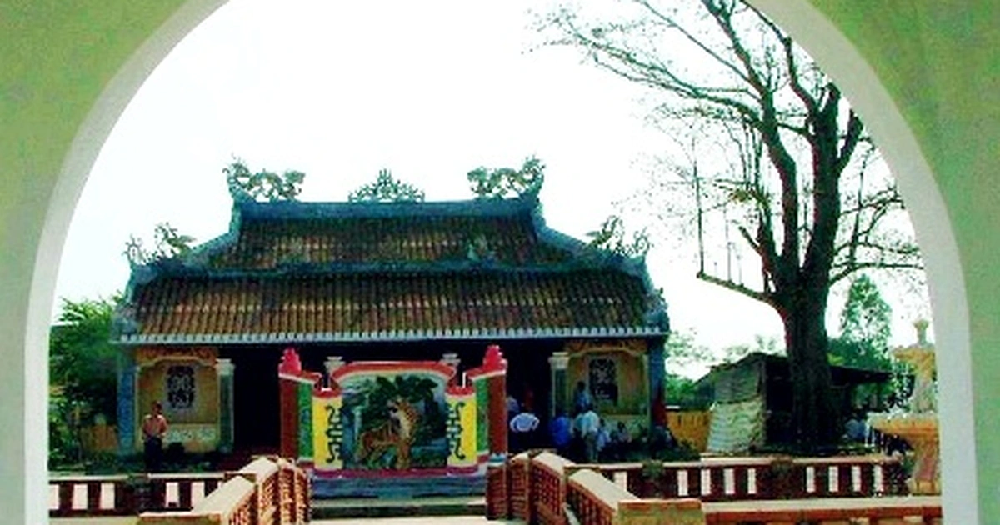
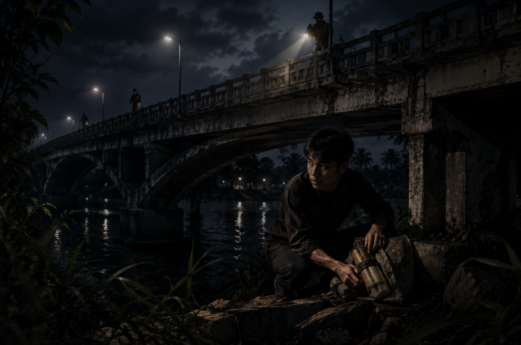
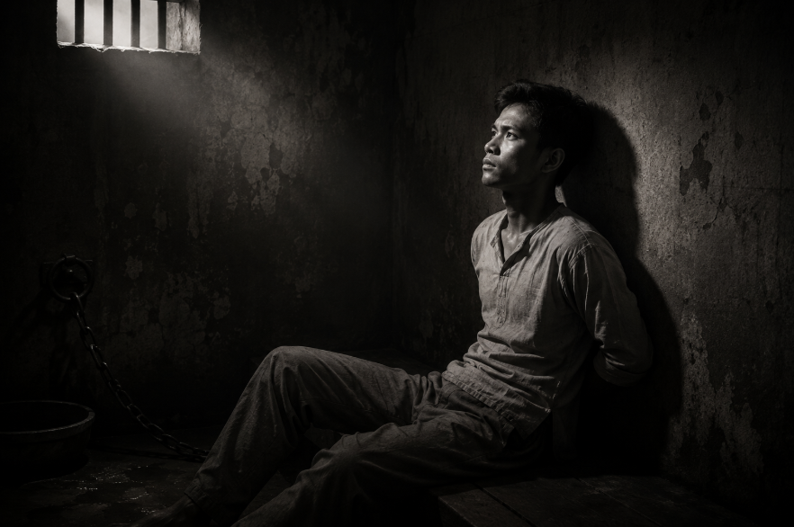
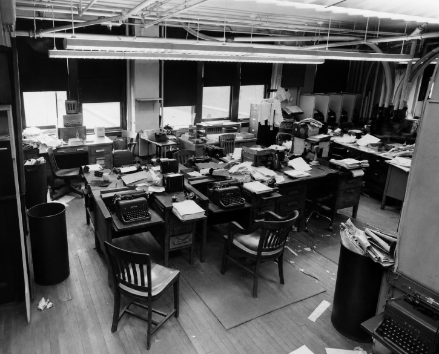

Năm 1940 — 1964 · 24 Tuổi Đời, Bất Khuất Đến Phút Cuối
Ngươi là Nguyễn Văn Trỗi — chàng thợ điện nghèo lớn lên từ làng quê Quảng Nam, dạt vào Sài Gòn mưu sinh rồi âm thầm gia nhập Biệt động Sài Gòn. Từ những đêm trinh sát cầu Công Lý, đến giờ phút bị bắt, bị tra tấn, bị tuyên án tử hình, và câu nói cuối cùng vang lên giữa pháp trường — một hành trình 11 chương về lòng dũng cảm của một người bình thường dám hành động.
🔥 11 chương🎓 Kiến thức + Kỹ xảo tương tác📖 Có nguồn tham khảo
▾ hoặc cuộn xuống
🌾 CHƯƠNG 1 · 1940–1955 — TUỔI THƠ QUẢNG NAM

gợi ý ảnh: "làng quê Quảng Nam xưa, ruộng lúa, nhà tranh"
LÀNG THANH QUÝT, ĐIỆN BÀN, QUẢNG NAM
📋 Lý lịch
Sinh ngày 1/2/1940 tại làng Thanh Quýt, xã Điện Thắng, huyện Điện Bàn, tỉnh Quảng Nam — một vùng quê nghèo miền Trung, nơi chiến tranh và thiên tai thay nhau đè nặng lên đời sống người dân. Là con thứ ba trong một gia đình nông dân nghèo đông con.
Ngươi là Nguyễn Văn Trỗi, cậu bé sinh ra trong một gia đình nông dân nghèo giữa những năm tháng đất nước còn chìm trong ách đô hộ thực dân Pháp, rồi tiếp nối bằng chiến tranh loạn lạc. Quảng Nam thời ấy vừa hứng chịu nạn đói, vừa là nơi giao tranh liên miên giữa quân Pháp và lực lượng kháng chiến — trẻ con trong làng lớn lên giữa tiếng súng xa xa và những buổi chạy loạn. Tuổi thơ không có nhiều thời gian cho việc học hành đủ đầy — chỉ có ruộng đồng, đói kém, và những câu chuyện người lớn kể về những người làng đã ra đi vì chiến sự, có người không bao giờ trở về.
Mẹ mất sớm khi Trỗi còn nhỏ, gia cảnh vốn đã khó khăn càng thêm chật vật. Giữa những năm 1950, như hàng vạn gia đình miền Trung khác chịu cảnh ruộng đất bị tàn phá bởi chiến tranh, gia đình Trỗi rời quê hương, xuôi vào Sài Gòn tìm kế sinh nhai. Với một thiếu niên vừa lớn, đó là lần đầu tiên rời khỏi lũy tre làng để bước vào một đô thị xa lạ, ồn ào, và đầy bất trắc — nơi không ruộng, không nhà, chỉ có đôi bàn tay để mưu sinh.
Người cha — trước ngày cả nhà rời làng
"Con à, vào trong đó rồi ráng học lấy cái nghề mà sống. Đất này giờ khó sống lắm, chỉ mong con lớn lên đàng hoàng, không phải khổ như cha."
📖 Bối cảnh Quảng Nam thập niên 1940–1950
Điện Bàn là một trong những vùng đất chịu ảnh hưởng nặng nề nhất của chiến tranh Đông Dương ở miền Trung — nơi phong trào kháng chiến chống Pháp bám rễ sâu trong lòng dân.
🌾 Gia đình nông dân nghèo, đông con💔 Mồ côi mẹ từ nhỏ🚶 Di cư vào Sài Gòn giữa thập niên 1950
🔎 KIỂM CHỨNG
Nguyễn Văn Trỗi sinh năm nào, tại làng nào ở Quảng Nam?
⚡ RỜI LÀNG VÀO SÀI GÒN, BẠN NGHĨ GÌ...
✔ HÀNH TRANG VÀO ĐỜI
🌾Đúng tinh thần lịch sử. Cái nghèo tuổi thơ ở Quảng Nam không làm Trỗi chùn bước — ngược lại, nó hun đúc trong ông một ý chí vươn lên và một sự đồng cảm sâu sắc với những người cùng cảnh ngộ, điều sau này dẫn ông đến với con đường đấu tranh vì công bằng xã hội.
⚡ TIẾP TỤC
✘ KHÔNG PHẢI TINH THẦN CỦA ÔNG
⚠Trỗi không sống với tâm thế "ở tạm". Ông nhanh chóng gắn bó với Sài Gòn, học nghề, lập gia đình, và xem đô thị này là nơi mình sẽ tranh đấu cho một tương lai công bằng hơn.
⚡ SỬA LẠI
⚡ CHƯƠNG 2 · 1955–1963 — CHÀNG THỢ ĐIỆN SÀI GÒN
gợi ý ảnh: "thợ điện Sài Gòn thập niên 1960, đường phố cũ"
NHÀ MÁY ĐIỆN CHỢ QUÁN, SÀI GÒN
📋 Bối cảnh
Vào Sài Gòn, Trỗi vừa làm thuê vừa học nghề thợ điện — công việc đòi hỏi sự tỉ mỉ, chính xác, và cả lòng gan dạ khi phải leo trèo trên cao, xử lý dây dẫn nguy hiểm. Ông làm việc gắn bó với nhà máy điện Chợ Quán, khu vực Quận 5 Sài Gòn.
Ngươi là một thanh niên tay nghề thợ điện vững vàng, sống giữa Sài Gòn những năm đầu 1960 — đô thị phồn hoa bậc nhất Đông Nam Á thời bấy giờ, nhưng cũng là nơi phân hóa giàu nghèo sâu sắc dưới chính quyền Ngô Đình Diệm rồi các chính phủ quân sự kế tiếp. Ngày ngày leo cột điện, nối dây, sửa chập cháy — nhưng mắt ngươi không chỉ nhìn thấy dây dẫn. Ngươi nhìn thấy sự bất công diễn ra ngay trên những con phố mình đi qua mỗi ngày: cảnh bắt bớ, cảnh những gia đình lao động nghèo bị chèn ép.
Xung quanh ngươi, chiến tranh mỗi ngày một lan rộng. Sau cuộc đảo chính lật đổ Ngô Đình Diệm cuối năm 1963, Sài Gòn liên tục thay đổi chính quyền, tình hình an ninh càng thêm bất ổn. Bạn thợ cùng xưởng thì thầm về những cuộc càn quét, về những người hàng xóm biến mất sau một đêm bị bắt vì tình nghi "có liên hệ" với lực lượng kháng chiến. Trong lòng chàng thợ điện trẻ, một câu hỏi cứ lớn dần: đứng nhìn, hay làm điều gì đó?
Một người bạn thợ cùng xưởng — thì thầm giữa giờ nghỉ
"Trỗi, mày cứ chăm chỉ đi làm, lo cho yên thân là được rồi. Thời buổi này, dính vào chuyện chính trị là mất mạng như chơi đó."
📖 Sài Gòn đầu thập niên 1960
Giữa lúc chính trường Sài Gòn liên tục biến động sau các cuộc đảo chính quân sự, phong trào đấu tranh đô thị của công nhân, sinh viên, tiểu thương âm thầm lan rộng — và những người thợ như Trỗi chính là lực lượng nòng cốt giúp mạng lưới bí mật hoạt động ngay giữa lòng thành phố.
⚡ Thợ điện tại Nhà máy điện Chợ Quán🏙️ Sài Gòn thời hậu đảo chính 1963👁️ Chứng kiến bất công đô thị mỗi ngày
🔎 KIỂM CHỨNG
Nghề nghiệp mà Nguyễn Văn Trỗi theo học và làm việc tại Sài Gòn là gì?
⚡ TRƯỚC LỜI KHUYÊN "LO YÊN THÂN"...
✔ NGỌN LỬA BẮT ĐẦU NHEN LÊN
⚡Đúng với con người Nguyễn Văn Trỗi. Ông không phải người sinh ra đã là chiến sĩ — ông là một thợ điện bình thường, nhưng không chấp nhận nhắm mắt làm ngơ trước bất công quanh mình. Chính điều đó đưa ông đến với những người anh em cách mạng bí mật giữa lòng đô thị.
⚡ TIẾP TỤC
✘ CON ĐƯỜNG KHÁC
⚠Đây không phải lựa chọn của Nguyễn Văn Trỗi ngoài đời thực. Ông không cam chịu đứng ngoài — chính sự phẫn nộ trước bất công đã đưa ông đến với con đường đấu tranh.
⚡ THỬ LẠI
🔧 CHƯƠNG 3 · 1963 — GIÁC NGỘ, GIA NHẬP BIỆT ĐỘNG THÀNH
📋 Bối cảnh
Giữa lòng đô thị Sài Gòn dưới chế độ Việt Nam Cộng Hòa, một mạng lưới bí mật — Biệt động Sài Gòn (còn gọi là Lực lượng Biệt động Quân khu Sài Gòn — Gia Định) — hoạt động ngầm, len lỏi trong đủ mọi tầng lớp: công nhân, tiểu thương, trí thức, và cả những người thợ điện như Nguyễn Văn Trỗi. Đây là lực lượng vũ trang đặc biệt, chuyên tổ chức những trận đánh táo bạo ngay giữa nội đô mà không cần căn cứ quân sự lớn.
Qua một người quen giới thiệu, Trỗi được kết nạp vào một tổ công tác vũ trang bí mật năm 1963. Không có nghi lễ long trọng — chỉ một cuộc gặp ngắn trong con hẻm tối, vài câu hỏi dò xét về lý lịch, thái độ, rồi một lời thề lặng lẽ giữ bí mật tuyệt đối. Cùng năm đó, ông kết hôn với Phan Thị Quyên, một cô gái Sài Gòn — người vợ trẻ chưa hề biết trọn vẹn về công việc bí mật của chồng, chỉ biết chồng mình là một thợ điện cần mẫn.
Người cán bộ giao liên — hỏi Trỗi trong đêm tối
"Anh có biết, một khi đã bước chân vào con đường này, không có đường lùi. Bị bắt là có thể mất mạng. Anh còn trẻ, mới cưới vợ — anh có chắc không?"
Trỗi im lặng một lúc, nhìn ánh đèn dầu chập chờn trong hẻm tối — thứ ánh sáng ông vẫn sửa chữa, nối lại mỗi ngày cho hàng ngàn ngôi nhà khác, nhưng chưa bao giờ đủ sáng để soi rõ một xã hội công bằng.
📖 Biệt động Sài Gòn là ai?
Khác với bộ đội chủ lực hoạt động ở chiến khu, Biệt động Sài Gòn là mạng lưới cực kỳ bí mật, mỗi chiến sĩ chỉ biết một vài đầu mối liên lạc trực tiếp của mình — để nếu một mắt xích bị lộ, cả hệ thống vẫn được bảo toàn. Đây là kiểu tổ chức đòi hỏi lòng trung thành và bản lĩnh giữ bí mật tuyệt đối, điều mà Nguyễn Văn Trỗi đã chứng minh trọn vẹn trong suốt quãng đời hoạt động ngắn ngủi của mình.
🤝 Kết nạp vào tổ vũ trang bí mật, 1963💍 Kết hôn cùng năm với Phan Thị Quyên🔒 Chỉ liên lạc qua vài đầu mối duy nhất
🔎 KIỂM CHỨNG
Vợ của Nguyễn Văn Trỗi — người sau này trở thành biểu tượng của lòng chung thủy và can đảm — tên là gì?
⚡ TRƯỚC CÂU HỎI "ANH CÓ CHẮC KHÔNG"...
✔ LỜI THỀ TRONG BÓNG TỐI
🕯️Đúng tinh thần lịch sử. Nguyễn Văn Trỗi gia nhập lực lượng vũ trang bí mật của Biệt động Sài Gòn năm 1963 — chấp nhận rủi ro cao nhất mà không hề chần chừ.
📖 Điều ít ai biếtPhan Thị Quyên khi đó không hề biết chồng mình đang tham gia một mạng lưới vũ trang bí mật — cho đến ngày ông bị bắt, bà mới hiểu trọn vẹn những gì chồng mình đã âm thầm gánh vác.
⚡ TIẾP TỤC
✘ KHÔNG PHẢI CÁCH ÔNG QUYẾT ĐỊNH
⚠Trỗi không trì hoãn quyết định quan trọng nhất đời mình. Sự dứt khoát ấy — chấp nhận hiểm nguy ngay khi đã hiểu rõ cái giá phải trả — mới là điều làm nên con người ông.
⚡ QUYẾT ĐỊNH LẠI
🔍 CHƯƠNG 4 · ĐẦU 1964 — TRINH SÁT CẦU CÔNG LÝ
gợi ý ảnh: "cầu sông Sài Gòn xưa, người thợ điện làm việc, ban ngày"
CẦU CÔNG LÝ, NHIỀU LẦN QUAN SÁT TRƯỚC KHI HÀNH ĐỘNG
📚 Bước chuẩn bị ít ai biết
Trước khi khối thuốc nổ được đặt xuống, tổ công tác đã dành nhiều tuần lễ âm thầm quan sát: giờ giấc tuần tra, tốc độ dòng xe qua cầu, độ chắc chắn của khung cầu, vị trí các trụ đỡ thuận lợi để giấu khối thuốc nổ — mọi chi tiết đều phải được nắm lòng bàn tay.
Cầu Công Lý bắc qua kênh Nhiêu Lộc, nằm trên tuyến đường huyết mạch nối trung tâm Sài Gòn với khu vực Bộ Tổng Tham mưu — nơi các phái đoàn quân sự Mỹ thường xuyên di chuyển qua lại. Nhờ nghề thợ điện, Trỗi có thể xuất hiện dưới gầm cầu, trên cột điện gần đó mà không ai nghi ngờ — chỉ là một người thợ đang làm nhiệm vụ thường ngày, tay cầm kìm, vai vác cuộn dây. Nhưng đằng sau vẻ ngoài bình thản ấy, mỗi ánh mắt đều đang ghi nhớ từng chi tiết nhỏ nhất: giờ đổi ca của lính gác, khe hở giữa các dầm cầu, lối rút lui an toàn nhất.
Một đồng đội — lo lắng sau lần trinh sát thứ ba
"Anh Trỗi, mình đã tới đây ba lần trong hai tuần rồi. Có người để ý thì sao? Lỡ bị theo dõi..."
Trỗi lắc đầu, tay vẫn giả vờ kiểm tra một mối nối dây điện. Với ông, sự thận trọng không có nghĩa là rút lui — mà là chuẩn bị kỹ đến mức không còn chỗ cho sai sót. Ông tin rằng một kế hoạch táo bạo chỉ có thể thành công khi được dựng nên từ hàng chục chi tiết nhỏ nhặt, tầm thường nhất.
📖 Vị trí chiến lược của cầu Công Lý
Cầu Công Lý (nay là cầu Nguyễn Văn Trỗi, TP.HCM) nằm trên trục đường nối trung tâm Sài Gòn với sân bay Tân Sơn Nhất và khu vực cơ quan đầu não quân sự — một điểm giao thông trọng yếu mà các đoàn xe cấp cao thường xuyên phải đi qua.
🗺️ Cầu nối trung tâm Sài Gòn — Tân Sơn Nhất🕵️ Nhiều tuần trinh sát bí mật🧰 Vỏ bọc: người thợ điện sửa dây
🔎 KIỂM CHỨNG
Vì sao Nguyễn Văn Trỗi lại là người phù hợp nhất trong tổ để tiếp cận khu vực cầu Công Lý nhiều lần mà không bị nghi ngờ?
⚡ TRƯỚC LO LẮNG "CÓ NÊN TRINH SÁT THÊM LẦN NỮA"...
✔ CHUẨN BỊ TỈ MỈ ĐẾN TỪNG CHI TIẾT
🔍Đúng với thực tế lịch sử. Kế hoạch đánh cầu Công Lý được chuẩn bị công phu qua nhiều tuần quan sát — không phải một hành động bộc phát, mà là kết quả của sự tính toán tỉ mỉ đến từng chi tiết nhỏ.
⚡ TIẾP TỤC
✘ KHÔNG PHẢI CÁCH TỔ CÔNG TÁC HÀNH ĐỘNG
⚠Đây không phải điều đã xảy ra. Kế hoạch được chuẩn bị hết sức kỹ lưỡng, không hề vội vàng — chính sự thận trọng đó giúp giữ bí mật trong suốt giai đoạn chuẩn bị.
📋 Bối cảnh
Đầu tháng 5/1964, tin tình báo cho biết Bộ trưởng Quốc phòng Mỹ Robert McNamara — kiến trúc sư chính của chiến lược Mỹ tại Việt Nam — sẽ đến Sài Gòn thị sát tình hình chiến sự, đoàn xe dự kiến đi qua cầu Công Lý. Đây là chuyến thị sát quan trọng giữa lúc Mỹ đang cân nhắc leo thang can thiệp quân sự.
Với phong trào đấu tranh đô thị đang tìm cách gây tiếng vang trên trường quốc tế, một đòn đánh nhắm thẳng vào phái đoàn cấp cao Mỹ ngay giữa Sài Gòn sẽ là lời khẳng định mạnh mẽ: chiến tranh không chỉ diễn ra ở chiến trường xa xôi, mà ngay tại trung tâm quyền lực. Sau nhiều tuần trinh sát, Trỗi chính thức được chọn làm người trực tiếp cài đặt khối thuốc nổ khoảng 8kg dưới cầu Công Lý, đúng thời điểm đoàn xe hộ tống McNamara dự kiến đi qua.
Chỉ huy trực tiếp — giao nhiệm vụ
"Đây là nhiệm vụ nguy hiểm bậc nhất. Một khi khối thuốc đã đặt xuống, chỉ có tiến, không có lùi. Anh là người duy nhất trong tổ có nghề nghiệp phù hợp để tiếp cận khu vực đó mà không bị nghi ngờ."
📖 Vì sao mục tiêu này quan trọng?
Robert McNamara là một trong những nhân vật quyền lực nhất trong bộ máy chiến tranh của Mỹ lúc bấy giờ. Một chiến công nhắm vào đoàn xe của ông ngay giữa Sài Gòn sẽ mang ý nghĩa biểu tượng vượt xa giá trị quân sự thuần túy — chứng minh rằng không nơi nào, kể cả trung tâm quyền lực, là an toàn tuyệt đối.
🎯 Mục tiêu: đoàn xe Bộ trưởng Quốc phòng Mỹ💣 Khối thuốc nổ khoảng 8kg🕐 Thời điểm: đầu tháng 5/1964
✏️ ĐIỀN TỪ — VƯỢT ẢI
Nguyễn Văn Trỗi được giao nhiệm vụ đặt mìn tại cầu Công Lý, nhằm vào đoàn xe hộ tống Bộ trưởng Quốc phòng Mỹ Robert __________ khi đi qua cầu.
⚡ NHẬN NHIỆM VỤ NÀY, BẠN NGHĨ GÌ...
✔ NHẬN NHIỆM VỤ KHÔNG DO DỰ
🎯Đúng lịch sử. Nguyễn Văn Trỗi nhận nhiệm vụ mà không một lời do dự, dù hiểu rõ đây gần như là nhiệm vụ một chiều.
⚡ TIẾP TỤC
✘ KHÔNG PHẢI CON ĐƯỜNG CỦA ÔNG
⚠Trỗi không né tránh nhiệm vụ nguy hiểm. Chính sự sẵn sàng đón nhận rủi ro lớn nhất mà không thoái thác mới là điều khiến ông trở thành biểu tượng sau này.
⚡ NHẬN LẠI NHIỆM VỤ
💣 CHƯƠNG 6 · ĐÊM 8 RẠNG 9/5/1964 — DƯỚI GẦM CẦU CÔNG LÝ

gợi ý ảnh: "dưới gầm cầu sông, ánh đèn pin, không khí căng thẳng"
DƯỚI GẦM CẦU, GIỮA ĐÊM TỐI
📋 Bối cảnh
Đêm 8 rạng sáng 9/5/1964, tổ công tác quyết định hành động. Khối thuốc nổ được ngụy trang kỹ càng trong lớp vỏ bọc như vật dụng sửa chữa điện thông thường, chuyển đến gần khu vực cầu theo từng chặng nhỏ để tránh bị phát hiện.
Đêm khuya, Nguyễn Văn Trỗi lặng lẽ tiếp cận khu vực dưới cầu, mang theo khối thuốc nổ được ngụy trang kỹ lưỡng. Từng bước chân đều phải tính toán — một tiếng động sai, một ánh đèn pin bất chợt của lính gác tuần tra, cũng đủ để mọi thứ sụp đổ. Không khí đặc quánh sự im lặng, chỉ có tiếng nước chảy dưới kênh và nhịp tim dồn dập của người thợ điện trẻ.
Trỗi — tự nhủ trong bóng tối, tay vẫn thoăn thoắt với dây và kíp nổ
"Bình tĩnh. Đúng như đã tập luyện. Đây là nghề của mình — chỉ khác lần này, sợi dây mình nối không phải để thắp sáng một căn nhà."
⏱️
GIỮ VỮNG BÌNH TĨNH
Tiếng bước chân tuần tra đang đến gần. Bạn có 10 giây để giữ im lặng tuyệt đối trước khi họ đi khuất — bấm nút khi cảm thấy đã đủ an toàn. Bấm quá sớm dễ bị lộ, bấm quá muộn cũng nguy hiểm không kém.
10
📖 Sự thật lịch sử
Kế hoạch đặt mìn dưới cầu Công Lý được chuẩn bị công phu, nhắm đúng thời điểm đoàn xe hộ tống Bộ trưởng McNamara dự kiến đi qua. Đây là một trong những chiến công táo bạo nhất của lực lượng Biệt động Sài Gòn thời kỳ đô thị.
📚 Điều đã xảy ra
Trước giờ đoàn xe dự kiến đi qua, kế hoạch bất ngờ bại lộ. Có nhiều giả thuyết về nguyên nhân — nhưng lực lượng an ninh Sài Gòn đã ập đến khu vực cầu Công Lý trước khi khối thuốc nổ kịp phát huy tác dụng. Chuyến thị sát của McNamara cuối cùng cũng đổi lộ trình vào phút chót.
Nguyễn Văn Trỗi bị bắt giữ ngay tại hiện trường, tay vẫn còn dính dầu mỡ của công việc chuẩn bị. Không kịp trốn thoát, không có đường lui — người thợ điện trẻ giờ đây đối diện với những kẻ thẩm vấn của chính quyền Sài Gòn, những người ngay lập tức nhận ra đây không phải một vụ án hình sự thông thường, mà là một âm mưu chính trị nghiêm trọng.
Viên sĩ quan an ninh — khi áp giải Trỗi đi
"Mày còn trẻ lắm. Khai ra hết những ai đứng sau vụ này, có thể còn giữ được mạng sống."
📖 Diễn biến sau khi bị bắt
Ngay sau khi vụ việc bị phát hiện, tin tức về "âm mưu ám sát Bộ trưởng Quốc phòng Mỹ" nhanh chóng lan truyền trên báo chí Sài Gòn và quốc tế, khiến chính quyền càng gia tăng áp lực thẩm vấn để tìm ra toàn bộ đường dây đứng sau.
📰 Vụ việc gây chấn động báo chí ngay lập tức🚔 Bị bắt tại hiện trường, không kịp rút lui
🔎 KIỂM CHỨNG
Kế hoạch đặt mìn tại cầu Công Lý diễn ra vào khoảng thời gian nào?
⚡ KHI BỊ ĐE DỌA "KHAI RA CÓ THỂ SỐNG"...
✔ IM LẶNG TUYỆT ĐỐI
🔒Đúng lịch sử. Dù bị bắt và đối diện án tử, Nguyễn Văn Trỗi không khai báo bất kỳ thông tin nào có thể gây nguy hiểm cho tổ chức và đồng đội.
⚡ TIẾP TỤC
✘ KHÔNG PHẢI SỰ THẬT LỊCH SỬ
⚠Đây không phải điều đã xảy ra. Trỗi giữ im lặng tuyệt đối suốt quá trình bị giam giữ và thẩm vấn — không một lời khai nào gây tổn hại cho tổ chức.
📚 Bối cảnh
Sau khi bị bắt, Nguyễn Văn Trỗi bị đưa ra xét xử trước một tòa án quân sự đặc biệt của chính quyền Sài Gòn — hình thức xét xử nhanh gọn, thường dành cho các vụ án bị xem là đe dọa an ninh nghiêm trọng, gần như không có không gian cho việc biện hộ đầy đủ.
Trong phòng xử án, không có nhiều thời gian tranh luận. Bản án gần như đã được định sẵn trước khi phiên tòa bắt đầu — chính quyền Sài Gòn muốn xử lý nhanh chóng một vụ việc đã gây chấn động dư luận. Trỗi đứng trước vành móng ngựa, ánh mắt bình thản lạ thường đối với một người vừa tròn 24 tuổi, đối diện với một bản án gần như chắc chắn là tử hình.
Chủ tọa phiên tòa — trước khi tuyên án
"Bị cáo có điều gì muốn nói trước khi tòa tuyên án hay không?"
🔎 KIỂM CHỨNG
Nguyễn Văn Trỗi bị đưa ra xét xử trước loại tòa án nào của chính quyền Sài Gòn?
Bấm vào con dấu để xem bản án tòa tuyên cho Nguyễn Văn Trỗi.
TỬ HÌNH
📖 Sự thật lịch sử
Tòa tuyên án tử hình Nguyễn Văn Trỗi. Trước bản án, ông không hề tỏ ra khiếp sợ — thái độ điềm tĩnh của một thanh niên 24 tuổi trước án tử đã khiến ngay cả những người trong phòng xử cũng phải kinh ngạc.
⚖️ Xét xử theo thủ tục quân sự khẩn cấp🕊️ Không một lời cầu xin khoan hồng
⚡ TRƯỚC BẢN ÁN TỬ HÌNH...
✔ ĐIỀM TĨNH TRƯỚC ÁN TỬ
⚖️Đúng lịch sử. Trước bản án tử hình, Nguyễn Văn Trỗi không hề nao núng hay cầu xin — một thái độ khiến câu chuyện của ông càng thêm chấn động trong dư luận đương thời.
⚡ TIẾP TỤC
✘ KHÔNG PHẢI SỰ THẬT LỊCH SỬ
⚠Đây không phải điều đã xảy ra. Trỗi không cầu xin khoan hồng — ông đối diện với bản án bằng sự điềm tĩnh hiếm có ở tuổi 24.
⚡ SỬA LẠI
🔦 CHƯƠNG 9 · THÁNG 5–10/1964 — TRONG NGỤC TỐI

gợi ý ảnh: "phòng giam cũ, song sắt, ánh sáng le lói"
KHÁM CHÍ HÒA, SÀI GÒN
📚 Bối cảnh
Trỗi bị giam tại Khám Chí Hòa — một trong những nhà tù khét tiếng nhất Sài Gòn thời bấy giờ, nơi giam giữ nhiều tù chính trị. Suốt gần 5 tháng, ông trải qua hàng loạt cuộc thẩm vấn liên tục, xen kẽ giữa tra tấn thể xác và những màn dụ dỗ tâm lý.
Suốt nhiều tháng, Nguyễn Văn Trỗi bị giam giữ và tra khảo bằng nhiều hình thức tàn khốc. Nhưng bất chấp đòn roi, bất chấp những lời dụ dỗ xen lẫn đe dọa, ông không khai ra một cái tên nào trong tổ chức của mình. Có những lúc chính quyền Sài Gòn đưa cả vợ ông — Phan Thị Quyên — đến gặp, hy vọng tình cảm gia đình sẽ khiến ông lung lay, nhưng ông vẫn giữ vững im lặng về mọi thông tin liên quan đến tổ chức.
💡
"Chỉ cần một cái tên thôi. Một cái tên, và tất cả sẽ dừng lại. Mày còn trẻ lắm, Trỗi à..."
🔎 KIỂM CHỨNG
Trong suốt thời gian bị giam giữ và tra khảo, thái độ của Nguyễn Văn Trỗi trước chính quyền Sài Gòn là gì?
📖 Sự thật lịch sử
Suốt gần 5 tháng bị giam cầm, Trỗi không hé một lời nào có thể gây nguy hại cho đồng đội, dù phải trải qua những đòn tra tấn khốc liệt của chính quyền Sài Gòn.
🏚️ Giam tại Khám Chí Hòa⏳ Gần 5 tháng thẩm vấn, tra tấn🤐 Không một lời khai báo
⚡ TRƯỚC ÁP LỰC LIÊN TỤC...
✔ Ý CHÍ KHÔNG GÌ LAY CHUYỂN
🔥Đúng lịch sử. Suốt gần 5 tháng bị giam cầm, Nguyễn Văn Trỗi không hé một lời nào có thể gây nguy hại cho đồng đội — dù phải đối diện với những đòn tra tấn khốc liệt nhất.
⚡ TIẾP TỤC
✘ KHÔNG PHẢI SỰ THẬT LỊCH SỬ
⚠Đây không phải điều đã xảy ra. Trỗi không hề giả vờ hợp tác — ông đối diện thẳng với mọi đòn tra khảo bằng sự im lặng kiên định.
⚡ SỬA LẠI
🌍 CHƯƠNG 10 · THÁNG 10/1964 — LÀN SÓNG QUỐC TẾ

gợi ý ảnh: "báo chí quốc tế thập niên 1960, phòng tin tức cũ"
TIN TỨC LAN RA KHẮP THẾ GIỚI
📚 Chi tiết ít người biết
Câu chuyện về bản án tử hình dành cho một thợ điện trẻ tuổi tại Sài Gòn đã vượt ra ngoài biên giới Việt Nam, chạm đến cả những phong trào cách mạng ở tận Nam Mỹ, giữa lúc phong trào cánh tả Mỹ Latinh đang lên cao trong bối cảnh Chiến tranh Lạnh.
Đầu tháng 10/1964, tại Caracas, Venezuela, một nhóm du kích thuộc Lực lượng Vũ trang Giải phóng Dân tộc (FALN) bất ngờ bắt giữ Trung tá Michael Smolen — một sĩ quan liên lạc quân sự Mỹ, đưa ra yêu sách: trả tự do cho viên sĩ quan này để đổi lấy việc hoãn thi hành án tử hình đối với Nguyễn Văn Trỗi ở Sài Gòn — một sự kết nối bất ngờ giữa hai điểm nóng cách xa nhau nửa vòng trái đất, cho thấy tiếng vang của vụ án đã lan rộng đến mức nào trong phong trào cánh tả quốc tế lúc bấy giờ.
TIN ĐIỆN QUỐC TẾ — THÁNG 10/1964
CARACAS: Du kích Venezuela bắt giữ sĩ quan liên lạc quân sự Mỹ, yêu sách đổi mạng cho Nguyễn Văn Trỗi tại Sài Gòn •
SÀI GÒN: Dư luận trong và ngoài nước xôn xao trước bản án tử hình dành cho người thợ điện 24 tuổi •
QUỐC TẾ: Nhiều tổ chức và cá nhân gửi điện kêu gọi hoãn thi hành án •
HAVANA: Báo chí Cuba đăng tải rộng rãi vụ việc, bày tỏ tình đoàn kết •
Một cai ngục — nói với Trỗi qua song sắt, giọng có phần ngạc nhiên
"Mày biết không, tận bên Nam Mỹ người ta còn bắt cả sĩ quan Mỹ để đòi đổi mạng cho mày đó. Mày là ai mà dữ vậy?"
🔎 KIỂM CHỨNG
Sự kiện quốc tế nào diễn ra vào tháng 10/1964 nhằm cố gắng cứu mạng Nguyễn Văn Trỗi?
📖 Sự thật lịch sử
Dù nỗ lực đổi mạng từ Venezuela từng làm dấy lên hy vọng hoãn thi hành án, cuối cùng chính quyền Sài Gòn vẫn quyết định xử bắn Nguyễn Văn Trỗi trước khi cuộc trao đổi có thể hoàn tất. Viên sĩ quan Mỹ bị bắt giữ sau đó được phía du kích trả tự do.
🌎 Vụ bắt giữ tại Caracas, Venezuela📡 Vụ án gây tiếng vang khắp thế giới🇨🇺 Báo chí Cuba, Mỹ Latinh đồng loạt đưa tin
🔀 SẮP XẾP — VƯỢT ẢI
Bấm vào các mốc sau theo đúng trình tự thời gian đã diễn ra:
Bấm chip theo thứ tự bạn cho là đúng...
⚡ TIẾP TỤC
🕊️ CHƯƠNG 11 · 15/10/1964 — PHÁP TRƯỜNG KHÁM CHÍ HÒA
📚 Bối cảnh
Sáng 15/10/1964, Nguyễn Văn Trỗi bị đưa ra pháp trường tại khám Chí Hòa để thi hành án tử hình bằng xử bắn. Ông vừa tròn 24 tuổi — bản án được thi hành gấp rút, chỉ hơn 5 tháng sau ngày bị bắt.
Buổi sáng hôm đó, sân nhà giam vắng lặng khác thường. Trước giờ hành quyết, các nhân viên định bịt mắt ông theo thông lệ. Trỗi từ chối — ông muốn nhìn thẳng vào những họng súng, muốn nhìn thấy quê hương lần cuối bằng chính đôi mắt của mình, không qua một tấm vải che. Ông cũng từ chối lời đề nghị làm lễ sám hối tôn giáo cuối cùng theo thủ tục thường lệ.
🔎 KIỂM CHỨNG
Trước giờ hành quyết, Nguyễn Văn Trỗi đã từ chối điều gì mà đội thi hành án định thực hiện theo thông lệ?
📖 Sự thật lịch sử
Theo nhiều tư liệu để lại, trước lúc bị bắn, Nguyễn Văn Trỗi đã hô vang "Việt Nam muôn năm!" nhiều lần. Cái chết của ông ở tuổi 24 đã trở thành biểu tượng bất khuất, truyền cảm hứng cho phong trào thanh niên đấu tranh khắp cả nước trong những năm sau đó.
📅 Hy sinh ngày 15/10/1964, tuổi 24👁️ Từ chối bịt mắt trước pháp trường🔥 Là chiến sĩ Biệt động Sài Gòn đầu tiên bị xử tử công khai gây chấn động dư luận quốc tế
⚡ TIẾP TỤC
🔥
NGỌN LỬA BẤT DIỆT
Từ một cậu bé nghèo ở làng Thanh Quýt, Quảng Nam, đến người thợ điện Sài Gòn, rồi chiến sĩ Biệt động Thành hy sinh ở tuổi 24 — hành trình của Nguyễn Văn Trỗi cho thấy một người bình thường vẫn có thể trở thành biểu tượng bất khuất, soi đường cho biết bao thế hệ thanh niên Việt Nam sau này.
🌾 Xuất thân từ làng Thanh Quýt, Điện Bàn, Quảng Nam🏙️ Tên đường, tên cầu Nguyễn Văn Trỗi tại nhiều tỉnh, thành (trong đó có chính cầu Công Lý xưa)🎓 Nhiều trường học mang tên ông🏆 Danh hiệu Anh hùng Lực lượng vũ trang nhân dân📖 Biểu tượng "Sống như Anh" cho thế hệ thanh niên🌎 Vụ án từng gây tiếng vang tới tận Venezuela
📜 BA ĐIỀU CÒN MÃI1. MỘT NGƯỜI BÌNH THƯỜNG CŨNG CÓ THỂ LÀM NÊN ĐIỀU PHI THƯỜNG
Nguyễn Văn Trỗi không phải là tướng lĩnh, không phải nhà lãnh đạo — chỉ là một thợ điện trẻ. Nhưng khi đứng trước lựa chọn, ông đã chọn hành động thay vì im lặng.
2. IM LẶNG CŨNG LÀ MỘT HÌNH THỨC CỦA LÒNG DŨNG CẢM
Suốt gần 5 tháng bị giam cầm và tra tấn, sự im lặng kiên định của ông đã bảo vệ được biết bao đồng đội — một dạng dũng cảm không cần đến vũ khí.
3. CÁI CHẾT KHÔNG PHẢI LÀ KẾT THÚC, MÀ LÀ SỰ TIẾP NỐI
Câu chuyện của ông trở thành nguồn cảm hứng cho phong trào "Sống như Anh" — một thế hệ thanh niên tự soi mình vào tấm gương của một người thợ điện 24 tuổi.
Ngày tháng, sự kiện, số liệu trong trang này được đối chiếu từ các nguồn dưới đây. Các đoạn hội thoại là dựng lại minh họa dựa trên tinh thần lịch sử, không phải nguyên văn ghi âm/ghi chép — trừ câu nói cuối cùng vốn đã được nhiều tư liệu ghi nhận.
Tài liệu chính thống
Quyết định truy tặng danh hiệu Anh hùng Lực lượng vũ trang nhân dân — Nhà nước CHXHCN Việt Nam
Sách "Sống như Anh" — Trần Đình Vân, ghi theo lời kể của bà Phan Thị Quyên
Tư liệu Bảo tàng Chứng tích Chiến tranh, TP.HCM
Hồ sơ báo chí quốc tế năm 1964 về vụ hành quyết và các phong trào phản đối liên quan, bao gồm vụ bắt giữ sĩ quan Mỹ tại Venezuela
Ghi chú về phương pháp thể hiện
Ngày tháng, địa điểm, kết quả sự kiện: dựa trên tư liệu lịch sử đã công bố rộng rãi
Hội thoại giữa các nhân vật (trừ lời cuối cùng đã được ghi nhận rộng rãi): dựng lại nhằm minh họa bối cảnh, không phải trích dẫn nguyên văn có ghi chép
Một số chi tiết về nguyên nhân bại lộ kế hoạch, cũng như diễn biến cụ thể của vụ đổi mạng tại Venezuela, còn có nhiều dị bản khác nhau trong các nguồn sử liệu; bài viết trình bày theo cách tiếp cận phổ biến nhất
Chi tiết về thời thơ ấu và gia đình ở Quảng Nam được ghi lại sơ lược trong các nguồn phổ biến, một số tình huống được dựng lại mang tính minh họa